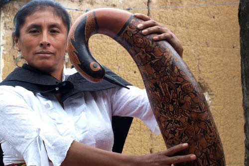

Allinllachu |alli-n-lla-chu| - Hola, adv. En buena hora, en hora oportuna, a buen tiempo, en buena coyuntura
Allin |alli-n| - Bien. s. Bien. adj. oportuno, modesto. Alli. adj. Bueno, buena; sano, sana; bien
- Allin waalalla kallaachun walaśhkuna - buenos días jovenes
- Allin waalalla kallaachun wamlakuna - buenos días señoritas
- Allin waalalla kallaachun taytallakuna - buenos días señores
- Allin waalalla kallaachun mamallakuna - buenos días señoras
- Allin waalalla kallaachun urukuna - buenos días niños
- Allin waalalla llapallaykichikpaq - buenos días para todos
Allin tuta - Buenas noches. Tuta. s. Noche
Allinllam - Bien
Sulpay - gracias
Allinmi, sulpay - Bien, gracias
¿Qamaa? - ¿Y usted?
Kushikuumi - Me alegro
Anchakta kushikuu - Mucho gusto
Yaqa anchaktam kushikuu - El gusto es mío
Imaynam qam kayanki - Cómo está usted
Kushikuumi tinkullaptinchik - Me alegro/a verla
Allin muyun kachun qampaq - Que sea un buen día para usted
- Imanuyllam - hola, ¡imanuyllam! - ¡qué tal!, ¿imanuyllam? - ¿cómo estás?
- Limaykullak - hola
- Yaymullay - bienvenido/a
- Yaykamullaychik - bienvenidos/as
- Ćhaskikullak - hola como respuesta
- Pampachaykamay - perdón, disculpa
- Amahaynuulla - por favor
- Sulpayllashunki - muchas gracias
- Allin muyunlla kallaachun - te auguro un buen día
- Hamallaa - hasta luego, chao de manera afectuosa
- Tinkunanchikkama - hasta la próxima, nos vemos
- Waalakama - hasta mañana (por la mañana)
- Waala minchakama - hasta pasado mañana
- Huk punkama - hasta otro día
- Huk killakama - hasta el próximo mes
- Watankama - Hasta el otro año

- Imanuullam ñañaa - Hola hermana
- Allinllam ñañaa - Bien mi hermana
ñaña - hermana, ñañaa - mi hermana
- Qam wawkiimi kanki - tú eres mi hermano
- Aw, wawkiykim kaa - si, yo soy tu hermano
- Imanuyllam panichallaa - Cómo estás hermanita mía
- Allinllam tulichallaa - Bien nomas mi hermanita lindo
- Huk muyunkama tulii - hasta mañana hermano
- Tinkunanchikkama panii - Hasta luego hermana-
Limanakuśhun. Limay. Hablar, Naku. suf. verb. mutuamente, Śhun. suf. vamos
-
- ¡Allinllachun! - ¡Hola!
- ¡Imanuyllam! - ¡Qué tal! -
- ¿Imanuyllam? - ¿Cómo estás?
- Allinllam - Bien -
- ¿Imanuyllam kayanki? - ¿Cómo estás tú?
- Allinllam, sulpay - Bien, gracias -
- ¿Imanuyllam kayanki? - ¿Cómo estás tú?
- Manam allinchu kaa, ¿Qamqa? - No estoy bien. ¿Y tú?
Yaqa allinllam kayaa, sulpay - Yo estoy bien, gracias -
Liqsinakuśhun. Liqsiy. Conocer, Naku. suf. verb. mutuamente, Śhun. suf. vamos
-
Miguel: ¿Imam śhutiyki? - ¿Cúal es tu nombre?
David: Yaqa Davidmikaa - Yo ciertamente soy David
David: Qampa ¿Imam śhutiyki? - De tí, ¿Cuál es tu nombre?
Miguel: Yaqa Miguelmi kaa - Yo soy ciertamente Miguel -
María: ¿Imam śhutiyki? - ¿Cúal es tu nombre?
David: Yaqa Davidmi kaa - Yo ciertamente soy David
María: ¿Maypiqtam kanki?
David: Pukaraa malkapiqtam kaa.
María: ¿Hayka watayuqmi kanki?
David: Yaqa 39 (kimsa ćhunka isqunniyuq) watayuqmi kaa.
María: ¿Imaktam lulanki?.
David: Yaqa takikuqmi kaa. ¿Pim kanki? - ¿Quién eres?, ¿Quién ciertamente(m) eres?, kanki: eres (segunda persona)
-
Presentación 1 Quechua Yaqa David García Ventocillam kaa.
Huancayuq malkapiqtam kaa.
Yaqa 39 (kimsa ćhunka isqunniyuq) watayuqmi kaa.
Yaqa ingeniero alimentarionishqam kaa.
Yaqa yaćhachikuqmi kaa.
Yaqa yaćhapakuqmi kaa.Interpretación Yo soy ciertamente David García Ventocilla
Soy en efecto del pueblo de Huancayo
Yo tengo 39 años.
Yo Soy denominado ingeniero alimentario.
Yo soy ciertamente maestro.
Yo soy ciertamente estudiante.Sufijos m / mi. es, son, hay (cuando en la oración está ausente el verbo), ciertamente (cuando el verbo está presente en la oración)
nishqa. dícese, denominado, llamado
piqta / piqmi. de, desde
yuq / niyuq. que tiene, que poseeVocabulario YAQA. pron. pers. Primera persona. cf. ñuqa.
KAY. cop. Ser. cf. kaykay.
MALKA. s. Pueblo, población.
WATA. s. año.
Yaćhachikuq. maestro.
Yaćhapakuq. estudiante. -
Presentación 2 Audio no disponible Quechua Yaqa David García Ventocillam kaa
Huancayuq malkapiqtam kaa
Yaqa 26 (ishkay ćhunka suqta) muyunćhu, abril killaćhaw, 1982 (walanka isqun paćhak pusaq ćhunka ishkayniyuq) wataćhuymi nasilqaa
Huancayuq malkaćhu, El Tambo distrito nishqaćhaw, Huancayuq provincia nishqaćhu. Junín región nishqaćhu, Perú suyućhu
Yaqa ingeniero alimentarionishqam kaaInterpretación Yo soy ciertamente David García Ventocilla
Soy en efecto del pueblo de Huancayo
Yo nací en efecto en el año 1982, en el mes de abril, en el día 21
En el pueblo de Huancayo, en el denominado-conocido distrito de El Tambo, en el denominado-conocido provincia de Huancayo, en el denominado-conocida región de Junín, en la nación de Perú.
Yo soy denominado ingeniero alimentarioSufijos ćhu / ćhuu / ćhaw / ćhuy. en (él/la), al final de la palabra toma la forma ćhu, al interior de una palabra toma la forma ćhuu
m / mi. es, son, hay (cuando en la oración está ausente el verbo), ciertamente (cuando el verbo está presente en la oración)
nishqa. dícese, denominado, llamado
piqta / piqmi. de, desde
yuq / niyuq. que tiene, que poseeVocabulario KAY. cop. Ser. cf. kaykay.
KILLA. s. Luna, mes.
MALKA. s. Pueblo, población.
MUYUN. s. Día.
WATA. s. ño.
SUYU. s. nación.
naasi refonelización de la palabra nací. -
Allin muyun
Buenos días
Yaqa Miriam Tinoco Oscanoam kaa
Yo soy Miriam Tinoco Oscanoa
Yaqa Perú suyuqpiqtam kayaa
Yo soy de la nación de Perú. Suyu = nación
Hampikuqmi kaa
Soy enfermera
Yaqa Hampina wasićhuumi lulapakuu Yo trabajo en un hospital. Lulapakuy = trabajar
Tinkunanchikkama
Hasta la próxima
-
Pay Fabiola Aguilar Medinam
Ella es Fabiola Aguilar Medina
Pay Pucarapiqtam kayan
Ella es sin duda de Pucará
Hilaqmi kayan
Ella en efecto es cocedora. Hilay, silay = cocer. Hilaq, silaq = aquel que coce
Huancayoćhuumi yaćhan
Ella reside en Huancayo. Yaćhay = habitar, residir
1982 (Walanka isqun paćhak pusaq ćhunka ishkayniyuq) wataćhuumi naasilqa
Nació en efecto en el año 1982
-
Pay Sebastian Garcíam
El es Sebastian García
Pay Huancayuqpiqtam kayan
El es sin duda de Huancayo
Yaćhapakuqmi kayan
El es estudiante. Yaćhapakuq = aquel que estudia, estudiante
Huancayuqćhuumi yaćhan
El reside en Huancayo. Yaćhay = habitar, residir
1991 (Walanka isqun paćhak isqun ćhunka hukniyuq) wataćhuumi naasilqa
Nació en efecto en el año 1991
-

Pay Irma Poma Canchumanim
Ella es Irma Poma Canchumani
Pay Cochas Chicopiqtam kayan
Ella es sin duda de cochas chico
Mati laćhkaqmi kayan
Es en efecto aquella que burila mate. Mati = mate. Laćhkay = escribir, burilar.
Cochas Chicoćhuumi yaćhan
Reside en efecto en Cochas Chico. Yaćhay = habitar, residir
1969 (Walanka isqun paćhak suqta ćhunka isqunniyuq) wataćhuumi naasilqa
Nació en efecto en el año 1969
1. ¿Imam śhutin?. ¿Cuál es su nombre?
Paypa śhutin Irma Poma Canchumanim. De ella ciertamente su nombre es Irma Poma Canchumani
2. ¿Hayka watayuqmi kayan?. ¿Cuantos años posee?
Pay 53 (pichqa ćhunka kimsayuq) watayuqmi kayan. Ella ciertamente posee 53 años
3. ¿Mayćhuumi yaćhan?. ¿En dónde reside?
Cochas Chicoćhuumi yaćhan. Reside en Cochas Chico
4. ¿Imaktam lulan?. ¿Qué cosa hace?
Mati laćhkaqmi kayan. Es en efecto aquella que burila mate
- Para la descripción de los oficios se usa el sufijo agentivo "q" = aquél / aquella / la / el que... que reemplaza al infinitivo "y = ar, er, ir"
- Se usa además el sufijo reflexivo "ku" que puede traducirse como "se", sin embargo se considerará como sufijo nuloPichaq = Pichakuq - aquel que barre - barrendero
Puliq = Pulikuq - aquel que camina - caminante
Talpuq = Talpukuq - aquel que siembra - sembrador/ra
Pallaq = Pallakuq - aquel que recoge, cosecha - recolector
Takiq = takikuq - aquel que canta - cantante
Yanuq = Yanukuq - aquel que cocina - cocinero/a
Amachaq = Amachakuq - aquel que protege - protector/a, abogado
Yaćhachiq = Yaćhachikuq - aquel que enseña - maestro, profesor
Yaćhapaq = Yaćhapakuq - aquel que estudia - estudiante
Juiciu apaq - Abogado
Yupaq - Contador
Uywa hampiq - Veterinario/a
Ishyachikuq - Obstetra
Llimpiq - Dibujante
Wasichakuq - Constructor de casa
Willakuq - Comunicador
Nina wañuchiq - Bombero
Tuśhuq - Bailarin
Llimpiq - Pintor (casa)
Llushikuq - Pintor (arte)
Hampiq - Médico
Tanta lulaq - Panadero/a
Laćhkaq - Escritor/a, burilador/a
Hilaq / Silaq - Costurero/a
-
¿Imam śhutiyki? - ¿Cuál es tu nombre? ( m/mi: cuando no está el verbo en la oración entonces "m/mi" asume el verbo, yki: tu)
Yaqa Davidmi kaa - Yo soy ciertamente David (kaa: soy, mi: ciertamente)
Yaqa Miriammi kaa - Yo soy Miriam
Yaqa Edgarmi kaa - Yo soy Edgar
Yaqa Lyndam kaa - Yo soy Lynda
Yaqa Flormi kaa - Yo soy Flor
Yaqa Miguelmi kaa - Yo soy Miguel
Yaqa Vivianmi kaa - Yo soy Vivian
Yaqa Denissmi kaa - Yo soy Deniss
Yaqa Antoniom kaa - Yo soy Antonio
Yaqa Alexmi kaa - Yo soy Alex
Yaqa Gustavom kaa - Yo soy Gustavo
Yaqa Lidiom kaa - Yo soy Lidio
Yaqa Taniam kaa - Yo soy Tania
- Yaqapa Maríam śhutii - yo soy María
- Rosam śhutii - yo soy Rosa
- Yaqa Andrés śhutiyuqmi kaa - yo soy Andrés
- śhutii Josémi - yo soy José
-
¿Imam lluy śhutiyki? - ¿Cuál es tu nombre completo? ( m/mi: cuando no está el verbo en la oración entonces "m/mi" asume el verbo, yki: tu) , lluy completo
Yaqapa David García Ventocillam śhutii - Mi (i) nombre (śhuti) es (m) David García Ventocilla de (pa) Yo (Yaqa) - Mi nombre es David García Ventocilla
Yaqapa David García Ventocillam śhutii
Yaqa 29 (ishkay ćhunka isqunniyuq) watayuqmikaa
- yo (yaqa) soy (kaa) ciertamente (mi) poseedora (yuq) de año (wata) veintinueve - yo tengo 29 añosYaqa tawa watayuqmi kaa - yo (yaqa) soy (kaa) ciertamente (mi) poseedora (yuq) de año (wata) cuatro - yo tengo 4 años
Yaqa 34 (kimsa ćhunka tawayuqmi kayaa - yo tengo 34 años
Yaqa 39 (kimsa ćhunka isqunniyuqmi kayaa - yo tengo 39 años
¿Imanktam lulanki? - ¿Qué (Ima) cosa (kta) ciertamente (mi) haces?
Yaqa awsaqmi kaa - yo (yaqa) soy (kaa) ciertamente (mi) el que (q) juega (awsa) - Yo soy jugador
Yaqa ingeniero alimentarionishqam kaa - yo (yaqa) soy (kaa) ciertamente (m) denominado (nishqa) ingeniero alimentario - Yo soy ingeniero alimentario
Yaqa ingeniero ambientalnishqam kaa - yo (yaqa) soy (kaa) ciertamente (m) denominado (nishqa) ingeniero ambiental - Yo soy ingeniero ambiental
¿Maypiqmi kayanki? ¿De dónde eres?
Yaqa Sapallangapiqmi kaa - yo (yaqa) soy (kaa) ciertamente (mi) de (piq) Sapallanga
Yaqa Huancayuqpiqta kaa - Yo soy de Huancayo
Yaqa Concepciónpiqta kaa - Yo soy de Concepción
¿Imanuyllam kayanki? |¿Ima-nuy-lla-m kayanki|- ¿Cómo estás?.
Ima. pr. int. ¿Qué, qué cosa, cuál.
nu=nuy=nuu=naw. suf. comparativo equivale a como, tanto como
lla. suf. indep. Equivale a no más, sino, solo.
m. suf. evidencial. Ciertamente
kayay. verb. Estar
nki. conjugación verbo de segunda persona.
Literal: Ciertamente qué cómo nomas estás¿Imanuyllam kayaa? - |¿Ima-nuy-lla-m kaya-a?| - ¿Cómo estoy?. -a. conjugación verbo persona
¿Imanuyllam kayanki? - |¿Ima-nuy-lla-m kaya-nki?| - ¿Cómo estás?. -nki. conjugación verbo segunda persona
¿Imanuyllam kayan? - |¿Ima-nuy-lla-m kaya-n?| - ¿Cómo está?. -n. conjugación verbo tercera persona
¿Imanuyllam kayalkanchik? - |¿Ima-nuy-lla-m kaya-lka-nchik?| - ¿Cómo estamos?. -lka. plurizador / -nchik conjugación verbo primera persona plural inclusivo
¿Imanuyllam kayalkaa? - |¿Ima-nuy-lla-m kaya-lka-a?| - ¿Cómo estamos?. -lka. plurizador / -a conjugación verbo primera persona plural exclusivo
¿Imanuyllam kayalkanki? - |¿Ima-nuy-lla-m kaya-lka-nki?| - ¿Cómo están?. -lka. plurizador / -nki conjugación verbo segunda persona plural
¿Imanuyllam kayalkan? - |¿Ima-nuy-lla-m kaya-lka-n?| - ¿Cómo están?. -lka. plurizador / -n conjugación verbo tercera persona plural
Allinmi kayaa - Estoy bien
Manam allinchu kaa - No estoy bien
Kushi kushisham kayaa -
Llakiśham kayaa -
Ishyayaami -
Pishipaśham kayaa -
Karillam kayaa -
Anchakta llamkalqa qanyaśh muyun -
Śhutillaami David -
Śhutiymi David -
Śhutiy David -
Yaapa śhutiy David -
Śhutillaa David -
Śhutiy David García Ventocillam -
Śhutiymi David García Ventocilla -
Śhutillaa David García Ventocillam -
Tawa ćhunka watayuqmi kaa -
Tawa ćhunka wataktañam liyaa -
Pay, kimsa ćhunka watayuqmi -
Pay, pichqa ćhunka watayuqmi -
Pay, unayñam wañukun -
Walmiipa śhutinmi -
Taytallaa suqta ćhunka huk watayuqmi -
Mamallaa suqta ćhunka isqun watayuqmi -
Taytaapa Gaudeciom -
Mamapaa Mariam -
ishkay watañam wañukun -
Manam wañukuśhanchu Pay kawsan -
Mañalaqmi wañikunchu kawsayanlaqmi. -
(1945) Walanka, Isqun paćhak, tawa ćhunka, pichqa watam naasilqa. -
(1984) Walanka, Isqun paćhak, pusaq ćhunka, tawa watam naasilqa -
Kimsa wawiyuqmi kaa -
Kimsanmi wamla -
Huk wamlallam -
Ishkayllam wawillaa (Huk walaśh, huk wamla) -
Huk wawiyuqllam kaa -
Tawa chuliyuqmi kaa, ñawpaqkaq walaśhmi, shullka chulillaa wamlam. -
Mana chuliyqmi kaa -
Hapallaqmi kayaa -
Hapalla kaku -
mamaawan tuliwan yaćhaa -
Taytaakunawanwanmi yaćhaa -
Wayapaawan yaćhaa -
Walmipaawan yaćhaa -
Wawiikunawan yaćhaa -
Chulikunawan yaćhaa -
paniiwan yaćhaa -
mamallaawan yaćhaa -
I.E. “30012” niśhanćhuumi -
I.E.E “Nuestra Señora del Rosario” niśhanćhuumi. -
I.E. 30173 de Huari ( kimsa ćhunka walanka, paćhak, qanćhis ćhunka, kimsayuq yaćhaywasićhuumi llamkaykuyaa). -
Hatunmi, hayćhuumi kan uruchakunap awsanankuna -
Kimsa ćhunka uruchakunaktam yaćhachiy. -
Malkaaćhuumi tuśhupaakunchik Shapishta, Santiagukta, Waylaśhta -
Malkallaaćhu talpupaakunchik halakta, akśhukta, alwishta, ullukukta, maśhwakta, trigukta, Awaśhta, Uwakta -
Lluumiktam yanukulqa. -
Shita śhaataktam yanukulqa -
Kalawsu sopaktam yakukulqa -
Manam yanukulqachu -
Walaćhuumi tantakta mikulqa kiisullantawan. -
Akśhu yanuytam mikulqa. -
Patachiktam mikulqa. -
Pay, manam llamkanchu; unayñam wañukun -
Cancerwanmi wañukun -
Covidwanmi wañukun -
Infartowanmi wañukun -
Ćhaklaaćhuumi talpukulqa -
Yaćhaywasiićhuumi llamkalqa. -
Mayućhuumi uwishniykunakta michilqa -
Aśhnu, Allqu, Atuq, Atuq, Añaśh, Akaśh -
Ñawinchayta, Hillkayta, Yuyayta, yupayta. -
Kay muyun uruchakunakta ñawinchayta yaćhachilqa. -
Wintuktam ñawinchayta yaćhachilqa -
Ñañaapa wawintam wankalimayta yaćhachiyaa. -
Hatun yaćhaywasi I.S.P.P Teodoro Peñaloza niśhanćhuumi yaćhaykulqaa -
U.N.C.P. niśhanćhuumi -
UPLA niśhanćhuumi -